Guía del Cuaderno del Profesor
Cómo instalarlo y usarlo paso a paso: tu curso, tus módulos, el calendario, el generador de clases, las rúbricas, la evaluación, las recetas y las copias de seguridad. Con capturas reales y vídeos cortos.
Versión en línea con vídeos: web-rsg.vercel.app/cuaderno/ayuda.html
▶ Vídeos cortos
Cada vídeo dura menos de un minuto y no tiene sonido: los rótulos explican cada paso.
1 Instalar la app
La app se instala desde el navegador, sin tienda de aplicaciones. Una vez instalada funciona sin conexión (la IA necesita internet) y se actualiza sola.
💻 Ordenador (Chrome o Edge)
- Abre la página de instalación.
- Pulsa «Instalar la aplicación», o el icono de instalar que sale a la derecha de la barra de direcciones.
- Se abre en su propia ventana y queda en el escritorio y en el menú Inicio.
📱 Android (Chrome)
- Abre la página de instalación.
- Pulsa «Instalar la aplicación» o, en el menú ⋮, «Instalar aplicación».
- El icono aparece en la pantalla de inicio.
🍎 iPhone o iPad (Safari)
- Abre la página en Safari.
- Pulsa Compartir (el cuadrado con la flecha hacia arriba).
- Elige «Añadir a pantalla de inicio».
Actualizaciones
Cuando hay una versión nueva, arriba sale el aviso «Hay una versión nueva de la aplicación». Pulsa «Actualizar ahora»: tus datos no se tocan. En Ajustes, abajo del todo, ves qué versión tienes.
2 Primeros pasos
La primera vez, la app te recibe con tres pasos: tu curso, tu primer módulo y ¡a trabajar!
🎬 Vídeo: primeros pasos (25 s)
Paso 1 · Crea tu curso
Escribe tu nombre y el de tu centro (son obligatorios: salen en la cabecera de fichas, exámenes y rúbricas). El correo, la localidad, las fechas del curso y el logo del centro son opcionales. El año del curso sale solo según la fecha.
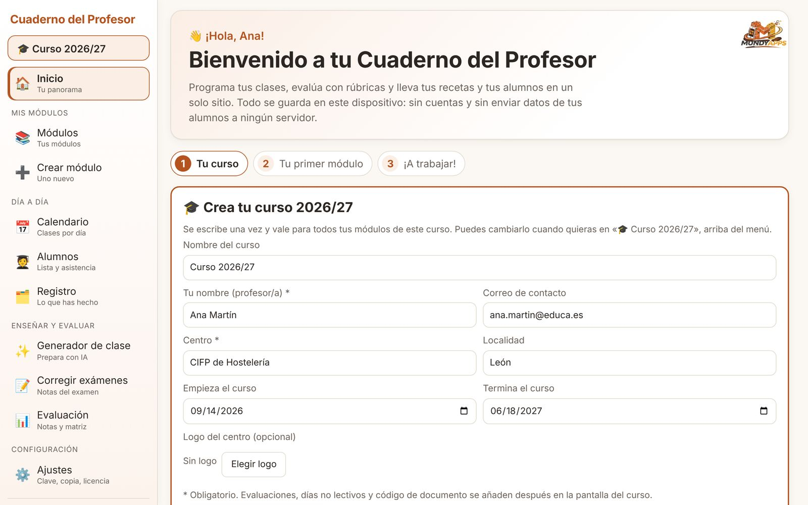
Paso 2 · Tu primer módulo
Puedes crear tu módulo o cargar un módulo de prueba con alumnos, clases y notas inventados para trastear (luego lo borras).
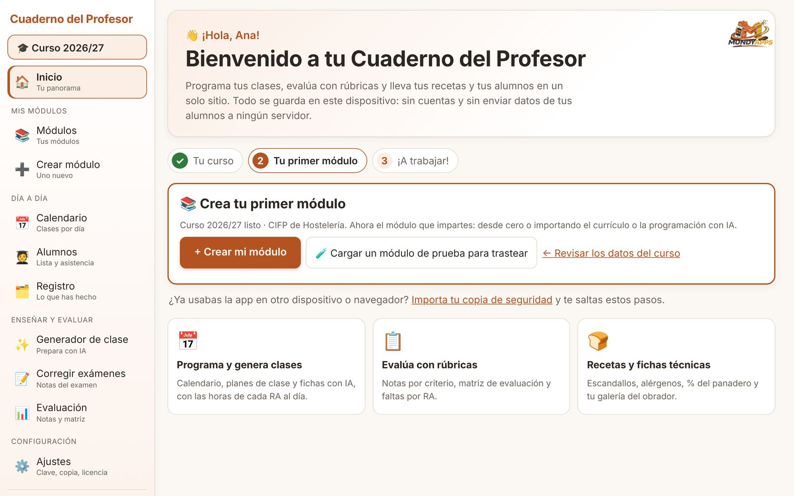
En Crear módulo tienes todas las formas de empezar:
- Desde cero: un módulo vacío con trimestres y reglas de evaluación por defecto.
- Importar currículo o programación: subes el Word o PDF y la IA propone RA, criterios, UT y pesos. Tú lo revisas antes de guardar.
- Ejemplo y módulo de prueba, para ver cómo funciona.
- Restaurar una copia si ya usabas la app en otro sitio.
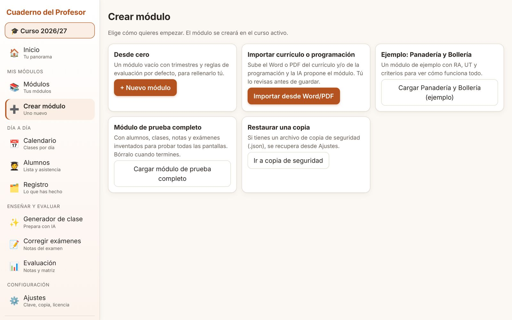
Configurar el curso y la IA
Con el botón «🎓 Curso…» de arriba del menú completas tu curso cuando quieras: código de documento, logo del centro y el calendario escolar (inicio y fin, evaluaciones y días no lectivos; también se puede importar el calendario del centro con IA).
🎬 Vídeo: configurar el curso y la IA (36 s)
Paso 3 · La inteligencia artificial (opcional)
La IA prepara clases, recetas, niveles de rúbricas y exámenes, e importa currículos. En Ajustes → Inteligencia artificial:
- Elige el proveedor. Gemini (Google) tiene modalidad gratuita para empezar; el enlace «Conseguir la clave» te lleva a crearla.
- Pega la clave y pulsa «Probar conexión».
- Elige la velocidad: «Rápida» (15–45 s), «Equilibrada» (recomendada) o «Máxima calidad» (varios minutos).
- Pulsa «Guardar»: el botón se pone verde.
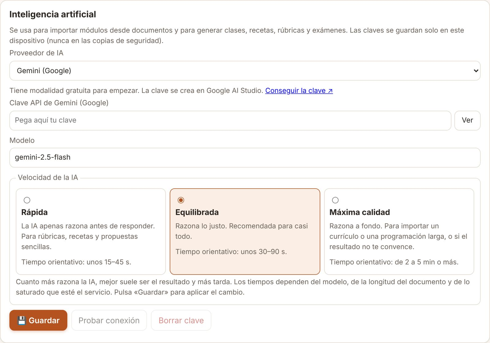
3 El día a día
Inicio
Tu panorama: el calendario del mes con las clases (T teórica, P práctica, E examen) y el estado de cada resultado de aprendizaje: horas dadas, horas que faltan y si está completado.
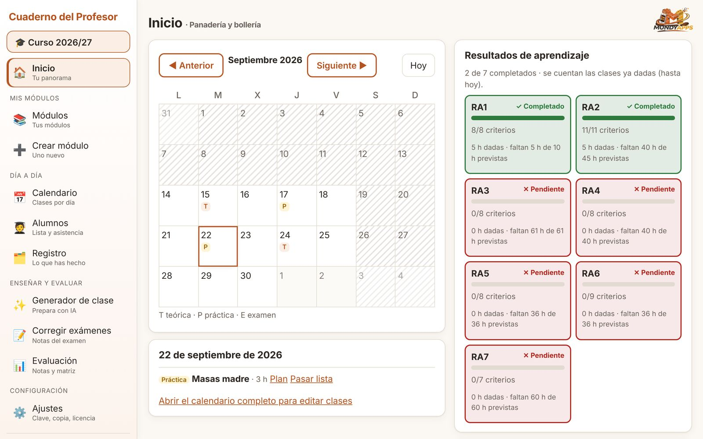
Calendario
Pincha un día para ver sus clases y, desde ahí, pasar lista, abrir la rúbrica o el plan. Con «+ Clase teórica» y «+ Clase práctica» añades una clase rápida. Los días sombreados son no lectivos (se configuran en tu curso).
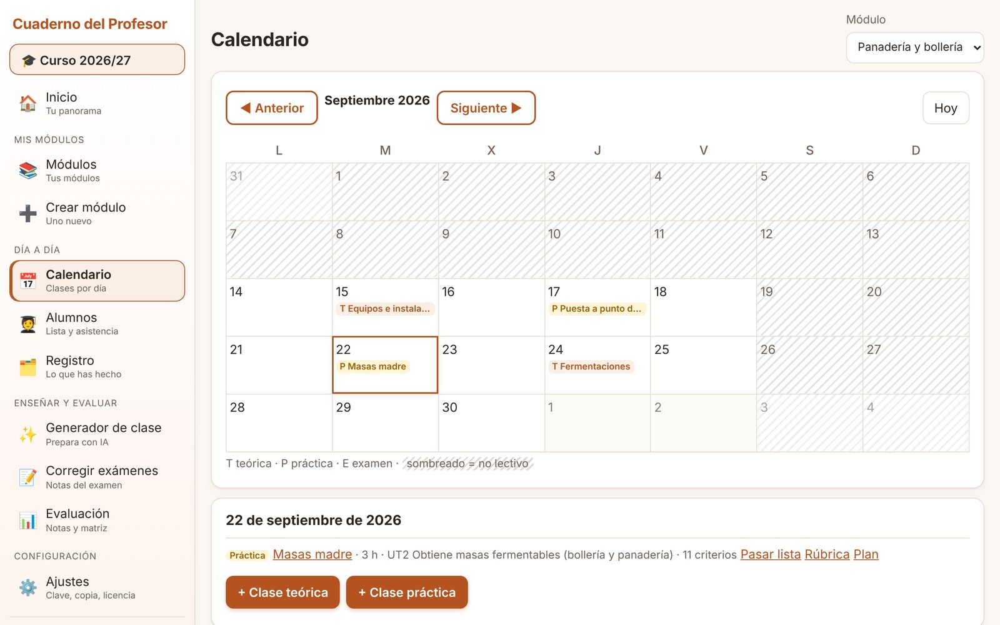
Alumnos y asistencia
🎬 Vídeo: alumnos y asistencia (27 s)
En Alumnos das de alta al grupo (uno a uno o pegando la lista: una línea por alumno con «apellidos, nombre, alergias»). Las alergias se avisan en las fichas de las prácticas. En Asistencia marcas cada día: P presente, F falta, J justificada, R retraso.
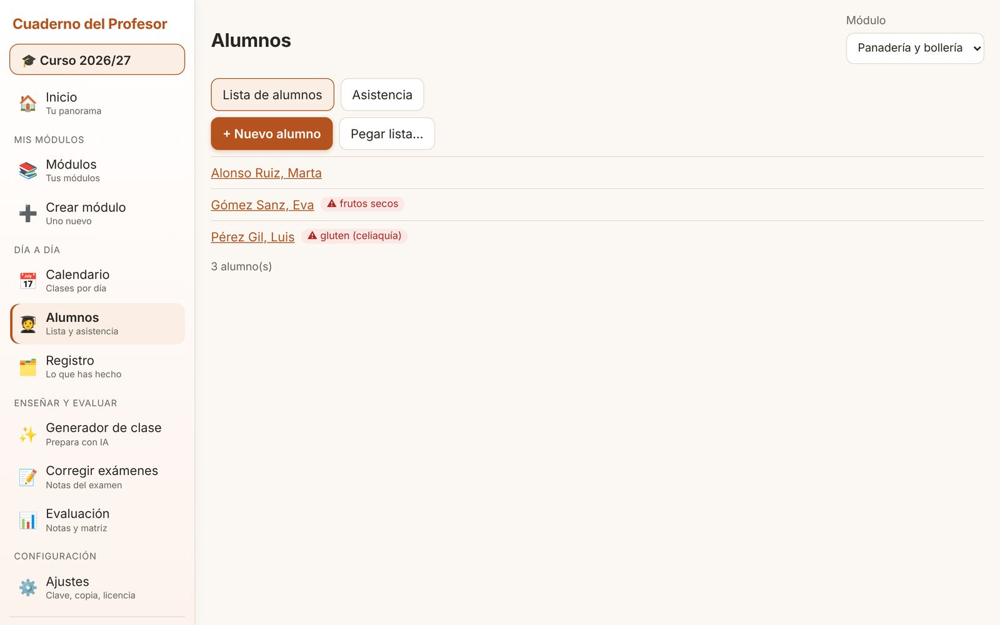
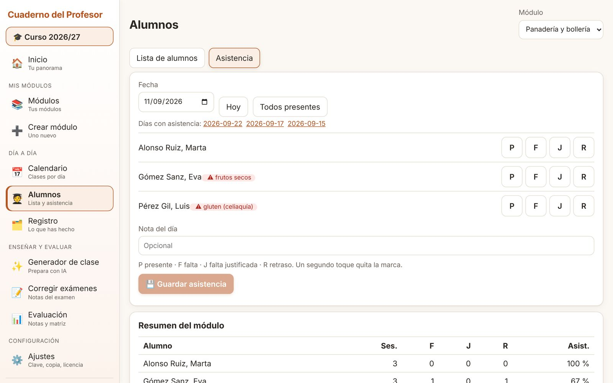
4 Programar una práctica
En Generador de clase → Práctica preparas la clase completa: datos curriculares, recetas, desarrollo y rúbrica. Se hace en tres pasos: generar ficha → vista previa → guardar.
🎬 Vídeo: programar una práctica (34 s)
Datos curriculares y calendario
Elige la unidad de trabajo: los RA y criterios se marcan solos (puedes quitar o añadir). Pon la fecha y las horas: la app te dice cuántas horas le quedan al RA con esta clase.
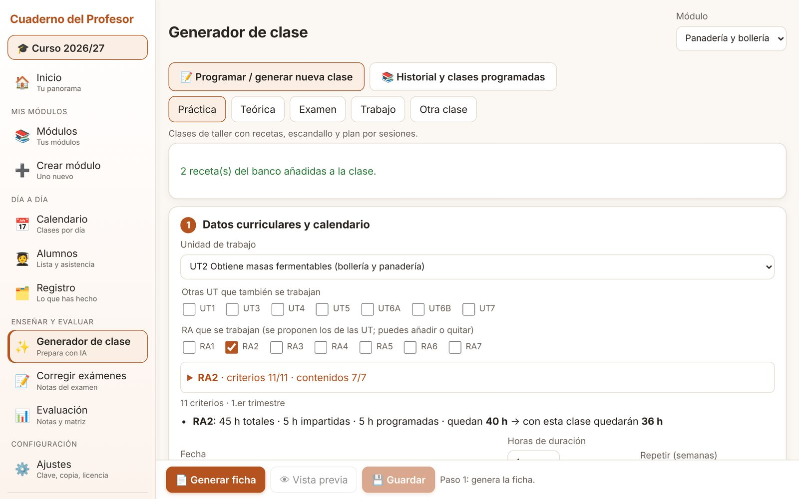
Recetas
Añádelas del banco (tus recetas guardadas), desde un archivo o una foto, o créalas con IA. Las recetas nuevas se guardan solas en Registro → Recetas.
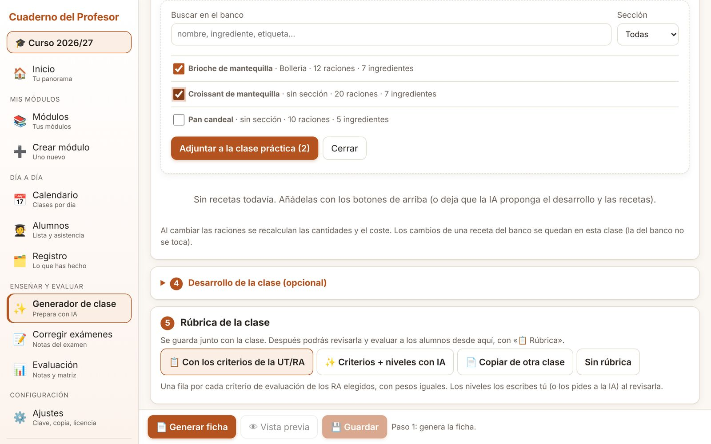
1 · Generar ficha
Monta la ficha de programación y la enseña debajo, con avisos de lo que falte (sin recetas, alérgenos sin revisar, día no lectivo…). Si cambias algo después, la ficha queda «desactualizada» y hay que generarla otra vez.
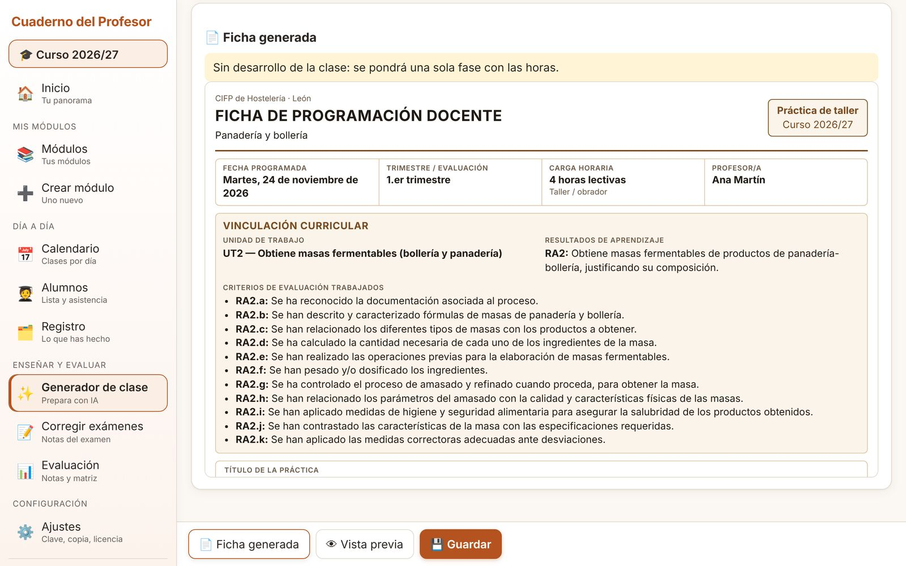
2 · Vista previa: imprimir, PDF o Word
La hoja A4 tal como saldrá. «Imprimir / Guardar PDF» (elige «Guardar como PDF» como impresora) o «⬇️ Word» para editarla en Word (lo que cambies en Word no vuelve a la app).
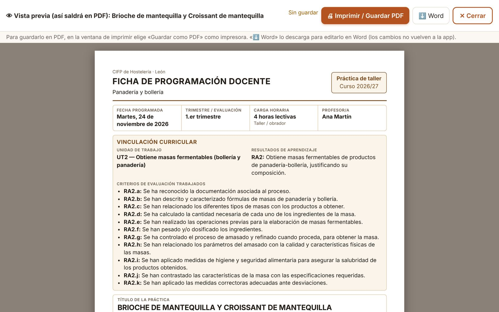
3 · Guardar
Guarda la clase en el calendario (con su rúbrica, si la elegiste). El botón se pone verde: «✅ Guardado». Si vuelves a cambiar algo, «Guardar cambios» actualiza la misma clase. Con «➕ Nueva clase» empiezas otra.
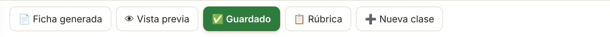
Las clases teóricas se programan igual (pestaña «Teórica»), pueden llevar tus apuntes, cuentan horas para el RA y no llevan rúbrica.
5 Rúbricas y evaluación
🎬 Vídeo: evaluar con la rúbrica y ver la matriz (36 s)
Tus clases de un vistazo
En Registro → Clases (y en el Historial del generador) cada clase es una tarjeta. Pinchándola abres su plan; el color dice cómo va:
- Próxima
- Sin evaluar
- Evaluada a medias
- Evaluada
- Teórica impartida
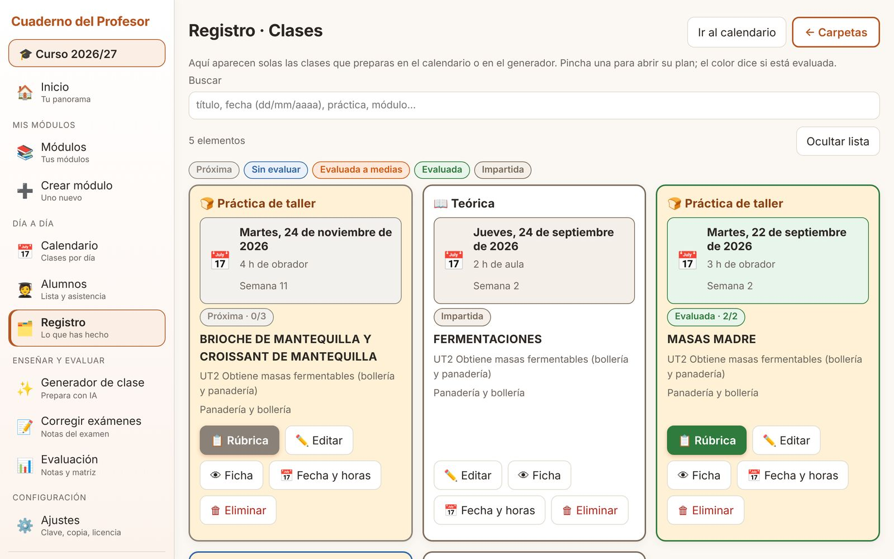
Preparar la rúbrica
Las filas salen de los criterios de los RA de la clase, con pesos iguales. Escribe los cuatro niveles o pulsa «Proponer niveles con IA». También puedes copiar la rúbrica de otra clase, añadir filas libres y verla, imprimirla o descargarla en Word.
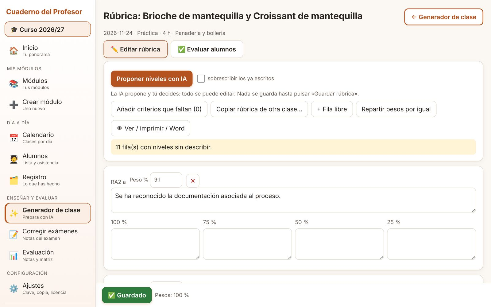
Evaluar alumnos
Elige el alumno, marca su asistencia de ese día y toca un nivel en cada criterio (o un atajo: Sobresaliente, Notable…). Con «Siguiente ▶» pasas al siguiente. La nota de la clase se calcula sola.
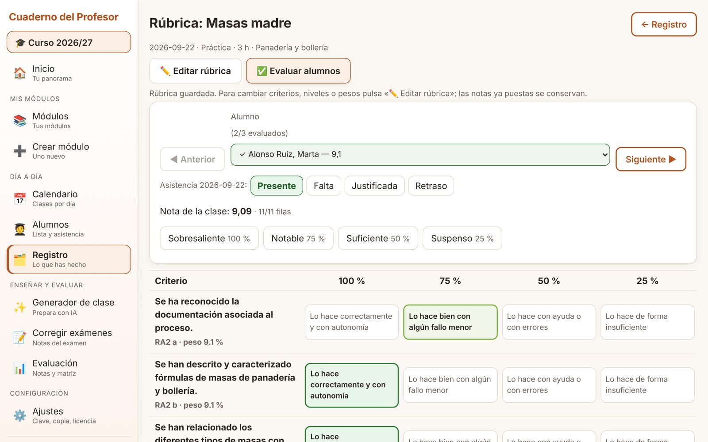
La matriz de evaluación
En Evaluación ves todas las notas por RA y UT: teoría, práctica, taller y nota del RA. Toca una nota para ver de dónde sale (rúbricas, exámenes…) y editarla si hace falta. Las notas finales se redondean al entero (6,5 → 7) y el módulo aprueba según tus reglas.
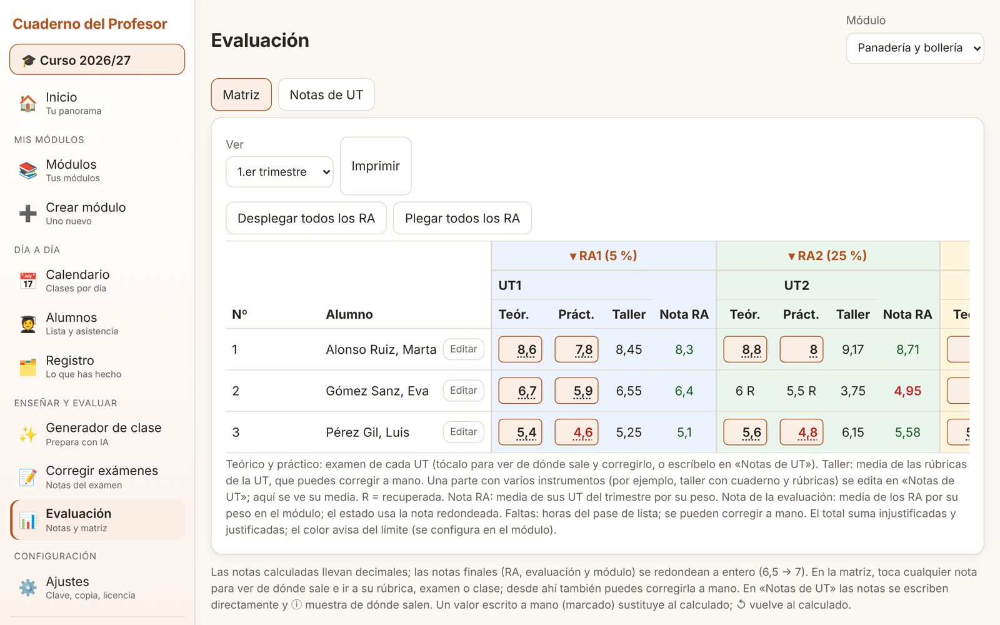
6 Recetas y galería
🎬 Vídeo: recetas y escandallo (30 s)
En Registro → Recetas tienes tu banco de fichas técnicas. Puedes crearlas a mano, desde una foto (de la pizarra o un libro), con IA o desde un archivo, y filtrarlas por categoría.
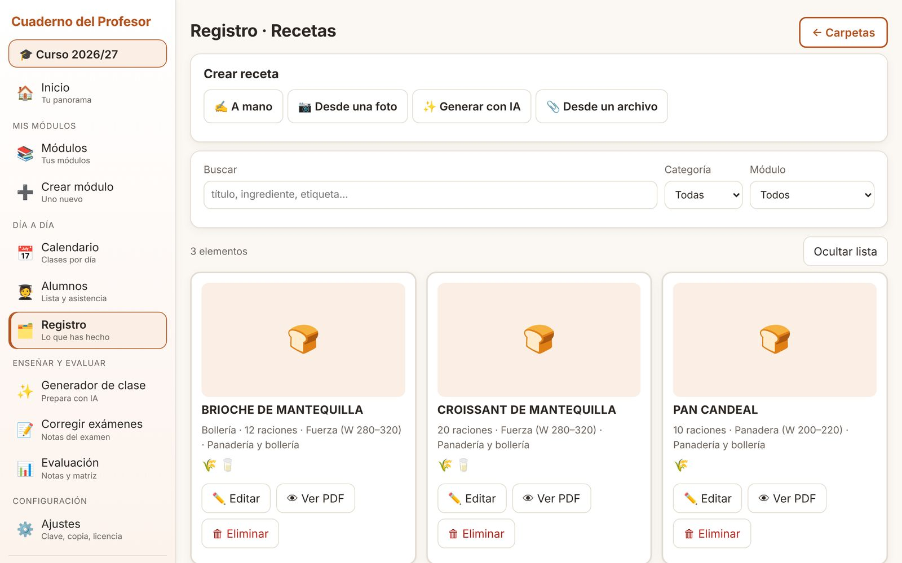
Cada ficha lleva ingredientes con cantidad y unidad, % del panadero sobre el ingrediente base, precio y escandallo (coste total, por ración y PVP), alérgenos UE, tiempos y temperaturas, pasos y foto. Al cambiar las raciones se recalculan cantidades y costes.
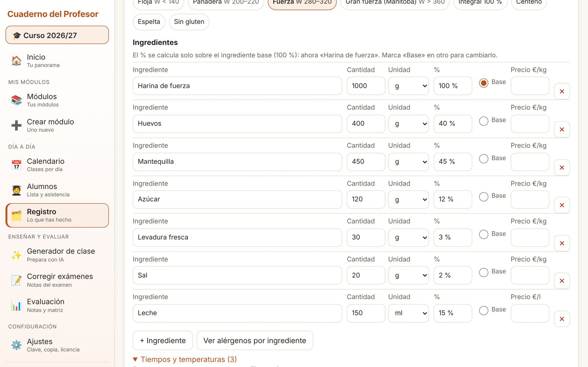
Galería del obrador (Registro → 🖼 Galería): sube tus fotos (o hazlas con el móvil) y ponlas en cualquier receta con «🖼 De la galería».
7 Exámenes
🎬 Vídeo: exámenes (31 s)
En Generador de clase → Examen creas exámenes teóricos (test, preguntas cortas y de desarrollo) o prácticos (con criterios), a mano o con IA, con un banco de preguntas reutilizable. Cada examen tiene hoja del alumno y hoja del profesor con las soluciones, en PDF o Word.
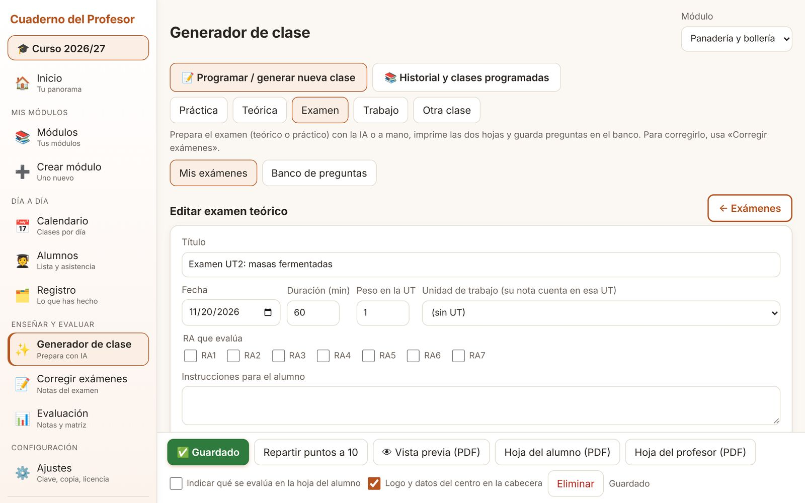
Para poner las notas usa Corregir exámenes: la nota va a la UT del examen y aparece en la matriz.
8 Cuando la IA tarda o falla
Mientras la IA trabaja verás un cuadro abajo a la derecha con el tiempo. Puedes seguir usando la app (incluso ir a otra pantalla) y, si se atasca, pulsar «⏹ Detener».
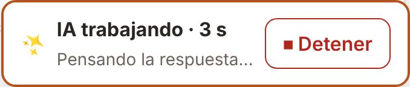
Si falla (sin conexión, servicio saturado, límite de uso…), sale un aviso con lo que ha pasado y el botón «🔄 Inténtalo de nuevo»: repite la petición sin perder lo que habías escrito. Si el problema es la clave o el modelo, te ofrece ir a Ajustes.
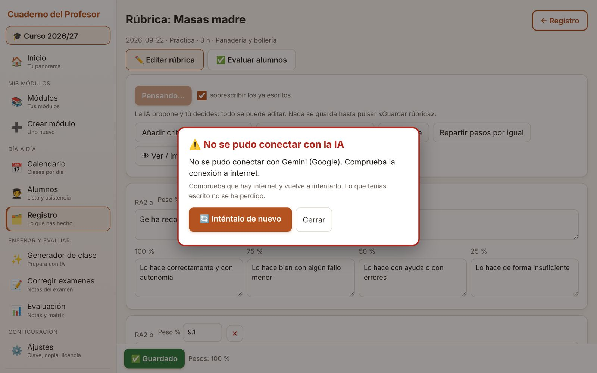
9 Tus datos y las copias de seguridad
Tus datos están solo en tu dispositivo, no en ningún servidor. Por eso es importante hacer copias.
🎬 Vídeo: copias de seguridad (17 s)
Copia a mano
Ajustes → Copia de seguridad → «Exportar copia» descarga un archivo con todo. Mejor cifrada con contraseña, porque lleva datos de alumnos (apunta la contraseña: sin ella no se recupera).
Copia automática (Chrome y Edge de ordenador)
- En Ajustes → 🗂 Copia automática, pulsa «Elegir carpeta para las copias». Si eliges una carpeta de OneDrive o Google Drive, las copias suben solas a tu nube.
- Elige cada cuántos días (1, 3, 7, 14 o 30) y cuántas copias se guardan.
- Opcional: cífrala con contraseña.
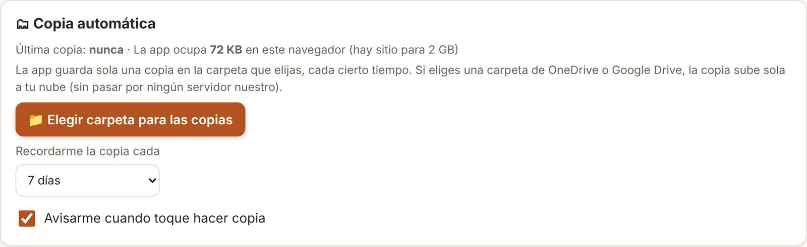
Si después de reiniciar el navegador pide volver a dar permiso a la carpeta, arriba sale un aviso: «Permitir y hacer la copia». En el móvil, Safari y Firefox no se puede escribir en carpetas: la app te recuerda hacer la copia cuando toca.
Cambiar de ordenador o de navegador
- En el antiguo: exporta la copia (o usa la de tu carpeta automática).
- En el nuevo: instala la app y, en la bienvenida o en Ajustes, pulsa «Importar copia…».
10 Preguntas frecuentes
¿Necesito internet?
No, salvo para la IA y para instalar o actualizar la app. Todo lo demás funciona sin conexión.
¿Dónde están mis datos? ¿Los ve alguien?
Solo en tu dispositivo, dentro del navegador. La app no los envía a ningún servidor. A la IA solo le llega el texto que le pides procesar, sin nombres de alumnos.
He abierto la app y está vacía
Seguramente la has abierto en otro navegador, otro perfil u otra dirección (cada uno guarda sus propios datos). Ábrela donde la usabas o importa tu copia de seguridad.
¿Puedo usarla en el ordenador y en el móvil a la vez?
Sí, pero cada dispositivo tiene sus datos. Para pasarlos de uno a otro, exporta la copia en uno e impórtala en el otro.
La IA tarda mucho
En Ajustes elige la velocidad «Rápida». Si se atasca, pulsa «⏹ Detener» y «Inténtalo de nuevo».
¿Cómo cambio los datos del curso o empiezo otro curso?
Con el botón «🎓 Curso…» de arriba del menú: ahí cambias profesor, centro, logo y calendario escolar, y creas un curso nuevo (puede copiar los datos del anterior).
¿Cómo edito una clase ya guardada en Word?
Abre su vista previa («👁 Ficha» en la tarjeta) y pulsa «⬇️ Word». Lo que cambies en Word no vuelve a la app.